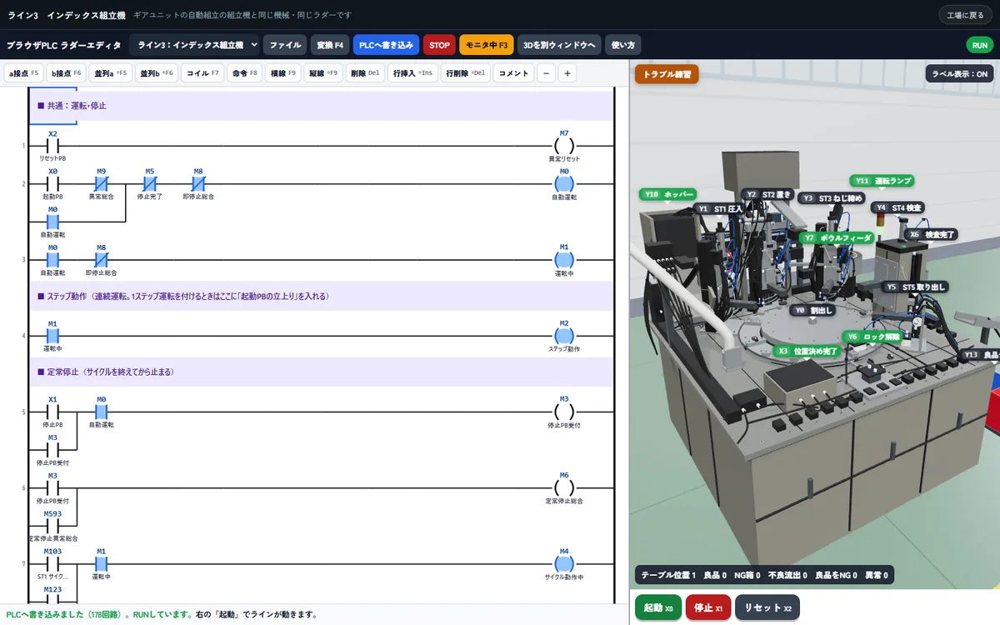

ライブデモ
話を聞く前に
動くものを触ってください
動く
ロアニクスが
登録は
工場ごと
工場の3Dシミュレータ
工程を
車を
試し方
- 工場の
中の 〔ギアユニットの 自動組立〕を 押す - 〔ラダーを
開いて 動かす〕→ 〔PLCへ 書き込み〕→ 右の 〔起動〕 - 〔トラブル練習〕で
故障を 1つ 入れ、 原因を 探して 直す
- 工程の
流れと 設備の 役割を 新人に 画面で 説明できる - 実機を
止めずに PLCの デバッグと 故障対応を 練習できる - 御社の
設備に 置き換えて 作ることも できます
パソコンで

教える
3Dシミュレータ
設備の
ラダー
試し方
- 右の
〔原点復帰〕を 押す - 〔
自動スタート〕を 押す - 下の
回路で 光っている 所と 機械の 動きを 見比べる
- 実機を
止めずに 何度でも 動かして 確かめられる - 回路を
書き換えて 送ると 書き換えた 通りに 機械が 動く - PLC研修と
教育システムの 教材と して 使っています
目利きを
ラダーカルテ
ラダーの
GX Works3の
試し方
- 開いた
画面で 〔体験用CSVで 試す〕を 押す - 危ない
順の 4つの 分類と 指摘の 一覧を 見る - 1件選んで
起きる 事故の 場面と 直し方を 見る
- ベテランが
ラダーを 見る ときの 「ここが 危ない」を 仕組みに 置き換えた ものです - 直す
作業は 新人に 任せ 判断の 要る 所だけベテランが 見る 形に できます
見つかった
- 2人身
- 0設備破損
- 2品質・
チョコ停 - 6読みやすさ
- 人身止めたのに
動き続ける排出 指令 中堅向け - 品質押しても
始まらない原点復帰 起動 新人でもできる - 読みやすさどこで
入るか 中堅向け追えない良品判定
10件の
作業指示書直す人に渡す紙
進捗マップ上の人に見せる紙 回路は載りません
〔体験用CSVで
社内で検討するときの材料に
受注からアフターまで 工程ごとの資料をお送りします。